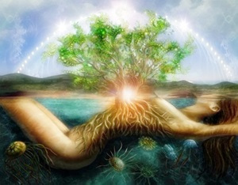
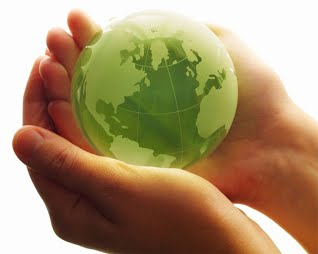

Dia internacional de la madre tierra 22 de abril

- 

- 

Realizado por:
Luis Jesus Sanchez Perez
4°-"H"
Especialidad:
Programacion
Submodulo:
Desarrolla Aplicaciones Moviles
Docente:
Lic.Jose Antonio Gómez Hernández
4°-"H"
Programacion
Desarrolla Aplicaciones Moviles
Lic.Jose Antonio Gómez Hernández
Celebramos el Dia internacional de la madre tierra para recordar que el planeta y sus ecosistemas nos dan la vida y el sustento. Con este dia, asumimos ademas la responsabilidad colectiva, como nos recordaba la declaracion de rio de 1992, de fomentar esta armonia con la naturaleza y la madre tierra. Ese dia nos brinda tambien la oportunidad de concientizar a todos los habitantes del planeta acerca de los problemas que afectan a la tierra y a las diferentes formas de vida que en él se desarrollan.


El origen de este día, celebrado mundialmente (aunque no en todas partes), se encuentra en Estados Unidos, durante los 70. Y está asociado, sin duda, a un nombre: Gaylord Nelson. La historia cuenta (a pesar de los curiosos rumores sobre Lenin) que fue este político quién aprovechó un miércoles para organizar una manifestación en defensa del medio ambiente y el ecologismo. Un momento muy estudiado y que venía cociéndose desde la década de los 60 debido a la creciente irresponsabilidad ambiental del gobierno de Estados Unidos. Ya habían gérmenes plantados desde la comunidad científica y estudiantil. Ese miércoles los estudiantes y trabajadores se unieron en una manifestación pacífica que pretendía rendir homenaje y mostrar la preocupación colectiva sobre temas como el medio ambiente, la superpoblación o la conservación de la biodiversidad.

“Madre Tierra” es una expresión común utilizada para referirse al planeta Tierra en diversos países y regiones, lo que demuestra la interdependencia existente entre los seres humanos, las demás especies vivas y el planeta que todos habitamos. La Tierra y sus ecosistemas son nuestro hogar. Para alcanzar un justo equilibrio entre las necesidades económicas, sociales y ambientales de las generaciones presentes y futuras, es necesario promover la armonía con la naturaleza y el planeta. Es por eso que celebramos el Día Internacional de la Madre Tierra para recordar que el planeta y sus ecosistemas nos dan la vida y el sustento. Con este día, asumimos, además, la responsabilidad colectiva, como nos recordaba la Declaración de Río de 1992, de fomentar esta armonía con la naturaleza y la Madre Tierra.
La armonía con la naturaleza es un sentimiento que los humanos experimentamos cuando estamos en equilibrio con la misma. En VerdelaTierra la armonía con la naturaleza es uno de los valores que nos identifica y en el que subyace también nuestra creencia de que es posible y deseable el equilibrio armónico humano-naturaleza, que nos da bienestar, salud y una calidad de vida con respecto al medio ambiente. La armonía con la naturaleza, además, se ha resaltado como un objetivo a alcanzar en el informe “Armonía con la naturaleza”, Diálogos Interactivos de la Asamblea General de Naciones Unidas, elaborado a propósito del Día Internacional de la Madre Tierra y a manera de preámbulo a la Conferencia de las Naciones Unidas sobre el Desarrollo Sostenible que se efectuó en Río de Janeiro (Brasil) en el año 2012. En dicho documento cobra importancia la necesidad de una nueva mentalidad y una importante transformación cultural para hacer posible la armonía con la naturaleza. También se menciona lo fundamental de un nuevo sistema económico que permita una sociedad más sostenible y que tenga como valor intrínseco el respeto profundo por la Tierra.
La gestión integrada de paisajes requiere comprender los diferentes impactos del uso de la tierra y equilibrar los intereses a menudo contradictorios de los diferentes grupos involucrados. Imaginemos que usted forma parte del gobierno del país X en África subsahariana. Desea cumplir con el Objetivo de Desarrollo Sostenible No. 1 que reza: “acabar con la pobreza en todas sus formas en todas partes". Sin embargo, es consciente de la necesidad de implementar todos los 17 Objetivos, incluido el Objetivo 15, que busca: "Gestionar sosteniblemente los bosques, luchar contra la desertificación, detener e invertir la degradación de las tierras y detener la pérdida de biodiversidad.” Imagine que usted tiene una gran extensión de pastizales secos donde casi nadie vive y quiere explotarlos de mejor manera, en beneficio de su gente.